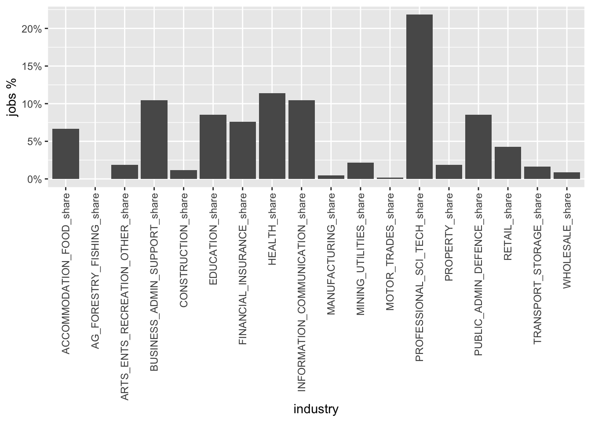
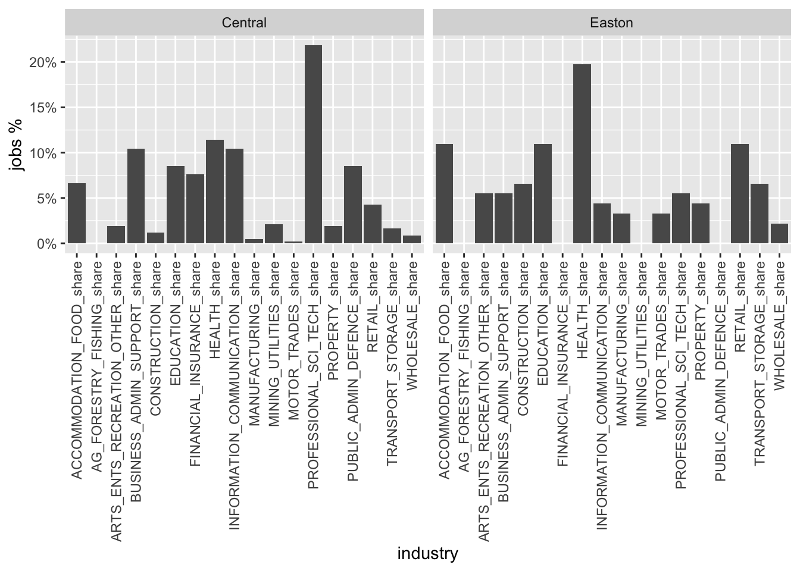

Question: Why should you go through all these efforts to build an API request and download the data in JSON file format instead of just downloading a .csv file?
APIs and urban data
Aims of the practical
Understand the technicalities and the breadth of the urban data landscape
Understand the messiness of real world (urban) data
Access programmatically urban data and understand the benefits of such data access practice.
APIs
Application Programming Interface (APIs) represent a ‘gate’ or otherwise a platform that enables a client (that is you) to interact with a server (for example opendata.bristol.gov.uk). According to AWS (2022):
In the context of APIs, the word Application refers to any software with a distinct function. Interface can be thought of as a contract of service between two applications. This contract defines how the two communicate with each other using requests and responses. Their API documentation contains information on how developers are to structure those requests and responses.
The client’s software (this might be R for example) sends a request to the server requesting specific data. The response is the data the client asked.
More commonly, the client might be a mobile phone app (e.g. train network status app) and the server is the network operator’s server.
APIs can be private or public types. For more information, see the description from AWS (2022) here
JSON file format
Although some urban data can be downloaded as a tidy1 table in a .csv format, most APIs will ship data to you in a JSON format.
According to the official JSON website (JSON), JSON
is a lightweight data-interchange format. It is easy for humans to read and write. It is easy for machines to parse and generate. It is based on a subset of the JavaScript Programming Language Standard ECMA-262 3rd Edition - December 1999. JSON is a text format that is completely language independent but uses conventions that are familiar to programmers of the C-family of languages, including C, C++, C#, Java, JavaScript, Perl, Python, and many others. These properties make JSON an ideal data-interchange language.
It adopts a hierarchical structure such as attribute:value instead of the fixed structure of tidy data. Following Singleton, Spielman, and Folch (2017), such attribute:value pairs might be:
"mean income": 50000"internet speed": 35"jobs": 15000
These attributes might be organised hierarchically. In JSON, curly brackets {} enclose an object (a set of attribute:value pairs) and square brackets [] enclose an array (an ordered list of values or objects):
[
{
"city": "Bristol",
"mean income": 27000,
"internet speed": 55,
"jobs": {"2019": 15000, "2020": 14000}
},
{
"city": "Newcastle",
"mean income": 25000,
"internet speed": 45,
"jobs": {"2019": 11000, "2020": 10000}
}
]Although this format is more verbose (attribute names are repeated) it is more flexible (not all observations need to have all attributes) (Singleton, Spielman, and Folch 2017)
Practical example with API
opendata.bristol.gov.uk offers a lot of data about Bristol. For this example, let’s try to work with Jobs by Ward (by industry) in Bristol 2020. You can also access these data by searching for ‘Jobs by industry in Bristol by Ward’. Use the filter icon to filter for 2020 data. As you can see, this is a small data set with \(34\) observations representing Bristol’s \(34\) Wards. You can visualise these data with the Table tab on the right hand-side and even download a .csv with these data. To begin with, do both of these things.
Then, go to the More Info icon, scroll down on the left hand side and click on I want to use this. You can find the relevant link under View API Resources. We are interested in the Filtered GeoService. You can view (View) the data in this format and also copy the link to access these data programmatically – this is what we do below. The weird output on your screen is the data you requested in JSON format. If you carefully read the URL from right to left you can see some logic on how this URL is built.
So, let’s try to access these data programmatically. First, we need to load the relevant R packages
library(tidyverse)
library(jsonlite)
library(sf)To access the data, we are going to use the function fromJSON() from the jsonlite package. Please check the syntax of this function as well as the other function of this package.
df <- jsonlite::fromJSON("https://maps2.bristol.gov.uk/server2/rest/services/ext/ward_profiles/MapServer/17/query?f=json&where=(YEAR%20IN%20('2020'))&outFields=*", flatten = TRUE)Please note that the above API link is different than the one used in previous years of this practical, which pointed to a different server (services2.arcgis.com) and returned the data with different column names. The code below has been adjusted to the current link. If the link changes again, you will need to tweak the code below. This is an example of how ephemeral data structures can be!
Anatomy of an API request
Let’s break down the URL we used above. It has two parts, separated by ?:
The endpoint, i.e. where the data live:
https://maps2.bristol.gov.uk/server2/rest/services/ext/ward_profiles/MapServer/17/query. This points to a specific service (ward_profiles), a specific layer within it (17, which is the Jobs by industry in Bristol (by Ward) table) and the operation we want to perform (query).The query parameters, i.e. what we want from these data. These are
name=valuepairs separated by&:f=json: the format of the response. Here we ask forJSON.where=(YEAR%20IN%20('2020')): which rows to return.%20is the URL-encoded version of a space, so this readswhere=(YEAR IN ('2020')). This layer contains data for several years (2015 onwards), so this parameter asks only for the 2020 rows.outFields=*: which columns (fields) to return.*means all of them.
Characters such as =, ' or spaces have special meaning in a URL, so they need to be encoded when used inside a parameter value: = becomes %3D, ' becomes %27 and a space becomes %20.
By changing these parameters we can ask the server to do some of the work for us. For example, the below request asks only for the WARD_NAME and RETAIL columns, only for the Central ward in 2020 (where=WARD_NAME='Central' AND YEAR='2020'):
df.central <- jsonlite::fromJSON("https://maps2.bristol.gov.uk/server2/rest/services/ext/ward_profiles/MapServer/17/query?f=json&where=WARD_NAME%3D%27Central%27%20AND%20YEAR%3D%272020%27&outFields=WARD_NAME,RETAIL", flatten = T)
df.central$displayFieldName
[1] "WARD_NAME"
$fieldAliases
$fieldAliases$WARD_NAME
[1] "Ward Name"
$fieldAliases$RETAIL
[1] "Retail"
$fields
name type alias length
1 WARD_NAME esriFieldTypeString Ward Name 30
2 RETAIL esriFieldTypeInteger Retail NA
$features
attributes.WARD_NAME attributes.RETAIL
1 Central 4500This is much smaller than downloading the whole data set and filtering it in R, which matters when data sets are large. The parameters each API accepts are described in its documentation. For the ArcGIS services used here, see the ArcGIS REST API documentation.
Question: How would you change the URL to get the same data for 2024?
We now have an R object called df. Let’s try to see what it looks like.
typeof(df)[1] "list"So, this is a list. If you need a reminder for what a list is, see here. Now the difficult part. Let’s try to figure out the structure of this JSON formatted data.
str(df)List of 4
$ displayFieldName: chr "WARD_NAME"
$ fieldAliases :List of 22
..$ OBJECTID : chr "OBJECTID"
..$ WARD_CODE : chr "Ward Code"
..$ WARD_NAME : chr "Ward Name"
..$ YEAR : chr "Year"
..$ AG_FORESTRY_FISHING : chr "Agriculture, forestry & fishing"
..$ MINING_UTILITIES : chr "Mining, quarrying & utilities"
..$ MANUFACTURING : chr "Manufacturing"
..$ CONSTRUCTION : chr "Construction"
..$ MOTOR_TRADES : chr "Motor trades"
..$ WHOLESALE : chr "Wholesale"
..$ RETAIL : chr "Retail"
..$ TRANSPORT_STORAGE : chr "Transport & storage (inc postal)"
..$ ACCOMMODATION_FOOD : chr "Accommodation & food services"
..$ INFORMATION_COMMUNICATION : chr "Information & communication"
..$ FINANCIAL_INSURANCE : chr "Financial & insurance"
..$ PROPERTY : chr "Property"
..$ PROFESSIONAL_SCI_TECH : chr "Professional, scientific & technical"
..$ BUSINESS_ADMIN_SUPPORT : chr "Business administration & support services"
..$ PUBLIC_ADMIN_DEFENCE : chr "Public administration & defence"
..$ EDUCATION : chr "Education"
..$ HEALTH : chr "Health"
..$ ARTS_ENTS_RECREATION_OTHER: chr "Arts, entertainment, recreation & other services"
$ fields :'data.frame': 22 obs. of 4 variables:
..$ name : chr [1:22] "OBJECTID" "WARD_CODE" "WARD_NAME" "YEAR" ...
..$ type : chr [1:22] "esriFieldTypeOID" "esriFieldTypeString" "esriFieldTypeString" "esriFieldTypeString" ...
..$ alias : chr [1:22] "OBJECTID" "Ward Code" "Ward Name" "Year" ...
..$ length: int [1:22] NA 10 30 4 NA NA NA NA NA NA ...
$ features :'data.frame': 34 obs. of 22 variables:
..$ attributes.OBJECTID : int [1:34] 171 172 173 174 175 176 177 178 179 180 ...
..$ attributes.WARD_CODE : chr [1:34] "E05010885" "E05010886" "E05010887" "E05010888" ...
..$ attributes.WARD_NAME : chr [1:34] "Ashley" "Avonmouth and Lawrence Weston" "Bedminster" "Bishopston and Ashley Down" ...
..$ attributes.YEAR : chr [1:34] "2020" "2020" "2020" "2020" ...
..$ attributes.AG_FORESTRY_FISHING : int [1:34] 0 10 0 0 0 0 0 0 0 0 ...
..$ attributes.MINING_UTILITIES : int [1:34] 15 700 10 0 10 0 30 2250 0 0 ...
..$ attributes.MANUFACTURING : int [1:34] 225 1500 1750 50 150 900 500 500 50 25 ...
..$ attributes.CONSTRUCTION : int [1:34] 175 1500 600 100 500 600 175 1250 600 400 ...
..$ attributes.MOTOR_TRADES : int [1:34] 50 1000 450 75 125 350 600 200 10 40 ...
..$ attributes.WHOLESALE : int [1:34] 250 4000 1000 45 100 500 150 900 50 35 ...
..$ attributes.RETAIL : int [1:34] 450 1000 700 200 700 200 1500 4500 450 700 ...
..$ attributes.TRANSPORT_STORAGE : int [1:34] 125 5000 175 10 20 350 600 1750 40 15 ...
..$ attributes.ACCOMMODATION_FOOD : int [1:34] 700 250 400 500 100 175 400 7000 1000 800 ...
..$ attributes.INFORMATION_COMMUNICATION : int [1:34] 800 175 350 175 225 400 700 11000 500 800 ...
..$ attributes.FINANCIAL_INSURANCE : int [1:34] 300 15 5 10 1500 10 15 8000 40 600 ...
..$ attributes.PROPERTY : int [1:34] 250 125 75 20 15 20 35 2000 600 450 ...
..$ attributes.PROFESSIONAL_SCI_TECH : int [1:34] 3500 500 500 250 75 200 600 23000 1000 1250 ...
..$ attributes.BUSINESS_ADMIN_SUPPORT : int [1:34] 1500 1750 900 175 125 1250 450 11000 900 1500 ...
..$ attributes.PUBLIC_ADMIN_DEFENCE : int [1:34] 40 250 30 300 0 0 400 9000 0 10 ...
..$ attributes.EDUCATION : int [1:34] 700 700 800 400 350 400 500 9000 2000 200 ...
..$ attributes.HEALTH : int [1:34] 1000 450 500 250 150 125 900 12000 300 450 ...
..$ attributes.ARTS_ENTS_RECREATION_OTHER: int [1:34] 400 250 200 300 175 125 150 2000 500 400 ...Well, it’s complicated. Looking on the above output of list() the object that looks most useful to us is the df$features.
Question: Based on the output of str(), why do you think is df\(features</code> the most useful part of
<code>df</code> for us? And what do you think <code>df\)fields contains?
And if you want to see what the dataframe df$features looks like, the below function will show all its columns (as rows), their type and their first few values.
glimpse(df$features)Rows: 34
Columns: 22
$ attributes.OBJECTID <int> 171, 172, 173, 174, 175, 176, 17…
$ attributes.WARD_CODE <chr> "E05010885", "E05010886", "E0501…
$ attributes.WARD_NAME <chr> "Ashley", "Avonmouth and Lawrenc…
$ attributes.YEAR <chr> "2020", "2020", "2020", "2020", …
$ attributes.AG_FORESTRY_FISHING <int> 0, 10, 0, 0, 0, 0, 0, 0, 0, 0, 0…
$ attributes.MINING_UTILITIES <int> 15, 700, 10, 0, 10, 0, 30, 2250,…
$ attributes.MANUFACTURING <int> 225, 1500, 1750, 50, 150, 900, 5…
$ attributes.CONSTRUCTION <int> 175, 1500, 600, 100, 500, 600, 1…
$ attributes.MOTOR_TRADES <int> 50, 1000, 450, 75, 125, 350, 600…
$ attributes.WHOLESALE <int> 250, 4000, 1000, 45, 100, 500, 1…
$ attributes.RETAIL <int> 450, 1000, 700, 200, 700, 200, 1…
$ attributes.TRANSPORT_STORAGE <int> 125, 5000, 175, 10, 20, 350, 600…
$ attributes.ACCOMMODATION_FOOD <int> 700, 250, 400, 500, 100, 175, 40…
$ attributes.INFORMATION_COMMUNICATION <int> 800, 175, 350, 175, 225, 400, 70…
$ attributes.FINANCIAL_INSURANCE <int> 300, 15, 5, 10, 1500, 10, 15, 80…
$ attributes.PROPERTY <int> 250, 125, 75, 20, 15, 20, 35, 20…
$ attributes.PROFESSIONAL_SCI_TECH <int> 3500, 500, 500, 250, 75, 200, 60…
$ attributes.BUSINESS_ADMIN_SUPPORT <int> 1500, 1750, 900, 175, 125, 1250,…
$ attributes.PUBLIC_ADMIN_DEFENCE <int> 40, 250, 30, 300, 0, 0, 400, 900…
$ attributes.EDUCATION <int> 700, 700, 800, 400, 350, 400, 50…
$ attributes.HEALTH <int> 1000, 450, 500, 250, 150, 125, 9…
$ attributes.ARTS_ENTS_RECREATION_OTHER <int> 400, 250, 200, 300, 175, 125, 15…Looking into the above, I can think of the following necessary data cleaning and wrangling steps:
remove the columns which don’t include any useful data for our analysis: the first column (
attributes.OBJECTID) is just an internal ID of the databaseremove the string “attributes.” from the column names
although not necessary, it is common practice for the first columns to contain identification data such as the ward names and codes.
rename the ward name and code columns to something shorter and more readable.
To do all the above, we will use the below functions from the dplyr package, which is part of the tidyverse ecosystem.
df <- df$features %>%
select(-attributes.OBJECTID) %>% # remove useless columns
rename_with(~sub("attributes.", "", .)) %>% # ~ introduces a formula: function `sub` substitutes (in other words replaces) the string "attributes." with an empty string "" for all columns (symbol .)
relocate(WARD_NAME, WARD_CODE) %>% # looks better
rename(Ward = WARD_NAME, # as above, Ward looks better than WARD_NAME ...
Ward_code = WARD_CODE) %>% # ... and Ward_code better than WARD_CODE
glimpse() # a glimpse of the outputRows: 34
Columns: 21
$ Ward <chr> "Ashley", "Avonmouth and Lawrence Weston", …
$ Ward_code <chr> "E05010885", "E05010886", "E05010887", "E05…
$ YEAR <chr> "2020", "2020", "2020", "2020", "2020", "20…
$ AG_FORESTRY_FISHING <int> 0, 10, 0, 0, 0, 0, 0, 0, 0, 0, 0, 0, 10, 0,…
$ MINING_UTILITIES <int> 15, 700, 10, 0, 10, 0, 30, 2250, 0, 0, 0, 0…
$ MANUFACTURING <int> 225, 1500, 1750, 50, 150, 900, 500, 500, 50…
$ CONSTRUCTION <int> 175, 1500, 600, 100, 500, 600, 175, 1250, 6…
$ MOTOR_TRADES <int> 50, 1000, 450, 75, 125, 350, 600, 200, 10, …
$ WHOLESALE <int> 250, 4000, 1000, 45, 100, 500, 150, 900, 50…
$ RETAIL <int> 450, 1000, 700, 200, 700, 200, 1500, 4500, …
$ TRANSPORT_STORAGE <int> 125, 5000, 175, 10, 20, 350, 600, 1750, 40,…
$ ACCOMMODATION_FOOD <int> 700, 250, 400, 500, 100, 175, 400, 7000, 10…
$ INFORMATION_COMMUNICATION <int> 800, 175, 350, 175, 225, 400, 700, 11000, 5…
$ FINANCIAL_INSURANCE <int> 300, 15, 5, 10, 1500, 10, 15, 8000, 40, 600…
$ PROPERTY <int> 250, 125, 75, 20, 15, 20, 35, 2000, 600, 45…
$ PROFESSIONAL_SCI_TECH <int> 3500, 500, 500, 250, 75, 200, 600, 23000, 1…
$ BUSINESS_ADMIN_SUPPORT <int> 1500, 1750, 900, 175, 125, 1250, 450, 11000…
$ PUBLIC_ADMIN_DEFENCE <int> 40, 250, 30, 300, 0, 0, 400, 9000, 0, 10, 0…
$ EDUCATION <int> 700, 700, 800, 400, 350, 400, 500, 9000, 20…
$ HEALTH <int> 1000, 450, 500, 250, 150, 125, 900, 12000, …
$ ARTS_ENTS_RECREATION_OTHER <int> 400, 250, 200, 300, 175, 125, 150, 2000, 50…Let’s try now to do some analysis based on these data and create some outputs.
df %>% mutate(total = rowSums(across(c(4:21))), # total jobs in a ward
across(c(4:21), # select the columns you are interested in
.names = "{col}_share") / total) %>% # divide these columns by total to create industry share within ward
# and name the new columns as oldname_share
select(1:2, 23:40) %>%
pivot_longer(!c(Ward, Ward_code), # These are the columns I am 'pivoting'
names_to = "industry", # This is how I will name the column with all the industries ...
values_to = "jobs_share") %>% # ... and the column with the jobs percentage
# Look https://tidyr.tidyverse.org/articles/pivot.html to
# understand the long to wide / wide to long transformations.
filter(Ward == "Central") %>% # Let's focus on Central Bristol
ggplot(aes(x=industry, y=jobs_share)) + # ... and create a bar chart for it jobs distribution
geom_bar(stat = "identity") +
# to understand the "identity part go on the Details section of the geom_bar documentation:
# https://www.rdocumentation.org/packages/ggplot2/versions/1.0.1/topics/geom_bar
scale_x_discrete(guide = guide_axis(angle = 90)) + # This line rotates the x labels,
scale_y_continuous(labels = scales::percent) + # this one shows the shares as percentages,
ylab("jobs %") # and here we rename the y axis.
Now, let’s do something slightly more interesting. Let’s create two plots to compare the job distribution between two Bristol wards.
df %>% mutate(total = rowSums(across(c(4:21))), # total jobs in a ward
across(c(4:21), # select the columns you are interested in
.names = "{col}_share") / total) %>% # divide these columns by total to create industry share within ward
# and name the new columns as oldname_share
select(1:2, 23:40) %>%
pivot_longer(!c(Ward, Ward_code), # These are the columns I am 'pivoting'
names_to = "industry", # This is how I will name the column with all the industries ...
values_to = "jobs_share") %>% # ... and the column with the jobs percentage
# Look https://tidyr.tidyverse.org/articles/pivot.html to
# understand the long to wide / wide to long transformations.
filter(Ward == "Central" |
Ward == "Easton") %>% # Let's focus on Easton and Central Bristol
ggplot(aes(x=industry, y=jobs_share)) + # ... and create a bar chart for it jobs distribution
geom_bar(stat = "identity") +
scale_x_discrete(guide = guide_axis(angle = 90)) + # This line rotates the x labels,
scale_y_continuous(labels = scales::percent) + # this one shows the shares as percentages,
ylab("jobs %") + # and here we rename the y axis.
facet_wrap(vars(Ward), ncol = 2) # facet_wrap creates two graphs based on `ward` and puts one next to each other
Well done! You’ve just utilised Bristol’s open data and became part of the urban open data revolution 😃.
Obviously the x labels are rather ugly.
Task: using and tweaking the code provided here, can you rename these labels?
Next task: Search for some other interesting data from opendata.bristol.gov.uk, access it programmatically, do the necessary data wrangling and produce some graphs in a new .Rmd document. Make sure to knit it as .html.
If this is too easy for you, why don’t you check the new Quarto format.
Accessing APIs using existing R packages
Now you might be lucky and somebody else has already done all the infrastructural / back-end work in order for you to easily interrogate an API and access their data. What would this look like? Like another R package. Here is a list with a few examples:
nomisris a package that allows you to access Nomis data withR. Find here an introduction.tidycensusis designed to work with thetidyverseecosystem and offers access to the US Census. This is the link. Pay extra attention to the spatial data option.The city of Toronto offers an
Rpackage to access City of Toronto Open Data Portal.See a relevant book by Bauer, Landesvatter, and Behrens (2022) available here.
Another task: On your own time, play with these packages and access some of the (urban) data they offer.
References
AWS, Amazon. 2022. “What Is an API? - API Beginner’s Guide - AWS — Aws.amazon.com.” https://aws.amazon.com/what-is/api/#:~:text=API%20stands%20for%20Application%20Programming,other%20using%20requests%20and%20responses.
Bauer, P. C., Landesvatter C., and L. Behrens. 2022. “APIs for Social Scientists: A Collaborative Review V1.0.” https://doi.org/https://doi.org/10.5281/zenodo.6798690.
JSON. “JSON — Json.org.” https://www.json.org/json-en.html.
Singleton, Alex D, Seth Spielman, and David Folch. 2017. Urban Analytics. Sage.